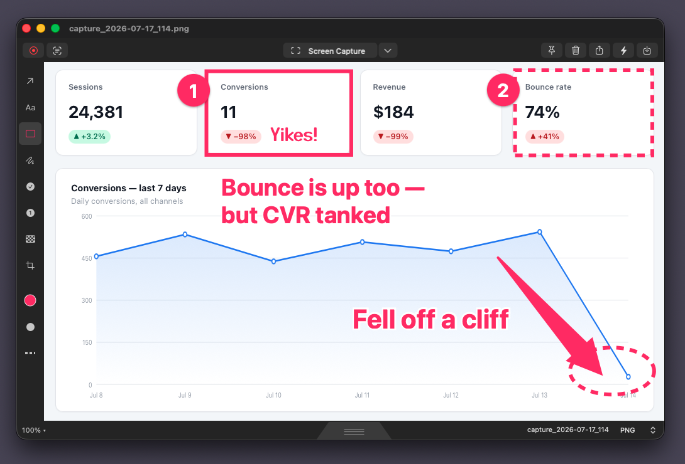
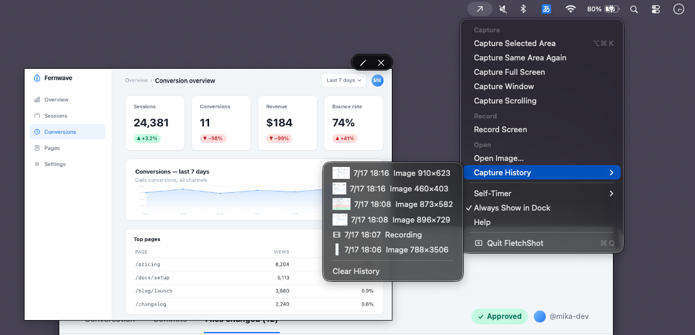

A screenshot annotation tool for macOS
Shoot, mark up, hand off.
Three seconds.
The moment you capture, the editor is open with the arrow tool already selected. Draw your arrow, then drag the tab at the bottom edge straight into Slack, Finder, or your terminal. Screen recording, GIF export and text recognition are in there too. It's free for 14 days, then a one-time $9.99 if you want to keep saving, copying, and sharing.
macOS 14 or later · Free 14 days, then $9.99 once · No account. The app makes no network calls.
The real thing
This is what three seconds looks like.
Three promises
Plenty of features, not many settings.
1Fast.
Press the shortcut, select an area, and the editor is already open, ready for your first arrow. We keep a time budget for each of those steps and treat a slowdown as a bug.
2Simple to set up.
Screen recording, GIF export, text recognition and capture history are all included. Each has only a few settings, and the defaults should suit most people.
3No uploads, no account.
FletchShot makes no network calls and doesn't upload anything. You decide what to share and where. No account, no cloud. Free for 14 days, then $9.99 once. No subscription.
Mark up
The arrow tool is already selected.
The editor opens as soon as the capture is taken, with the arrow tool already selected. No save dialog, no mode to pick first.
The arrow starts narrow where you begin dragging and widens toward the tip. It's one filled shape, not a line with a head stuck on the end. Pink by default, like Skitch's.
Nine preset colors, plus a color picker for anything else. The last eight colors you picked stay one click away.
Every annotation stays editable: click it again to move or delete it. Undo goes back pretty much as far as you need.

Hand off
Grab the tab, drop it into Slack.
When you're done drawing, drag the tab at the bottom edge into Slack, Mail, Finder, or your terminal. It arrives as an ordinary image file.
No save dialog, no export step, and no digging through Downloads for the file to attach.
Prefer the clipboard? ⌘⇧C copies the image and closes the window.
Shoot
Same region, again.
FletchShot remembers your last selection and captures the same area again in one step. Handy when you're writing docs or a bug report and need the same part of the screen over and over.
Window capture is a single key too, so you don't have to trace window edges by hand.
Record
When it moves, show it moving.
Record the full screen, an area, or a single window. Click highlights are one click to turn on or off.
Export as MP4 or GIF at High, Medium, or Low quality. Medium is fine for most things; use Low when you want a smaller file for Slack.
Mark up video
Draw on the recording, too.
The arrows, shapes, pen, stamps, numbers and text you use on screenshots work on recordings too. Draw directly on the video, and it's all burned into the exported file.
Trimming isn't limited to the start and end anymore. You can cut a section out of the middle. Select the part you don't want, like a long pause, the wrong window, or a step you had to redo, and Cut it. No need to record again.
Each annotation has its own start and end time, so an arrow can show up only when it's needed. Pixelate works on video too, for names, addresses, or notifications that ended up in the frame, before you send the file to anyone.
Shoot
Pin it to the screen.
Float any capture above all your other windows and keep it beside what you're working on. Useful for comparing designs or following steps.
Hand off
Text as text.
OCR pulls the text out of any capture. Copy an error message, a table, or some code from a screenshot and paste it as text.
If the text is JSON, it goes to the clipboard already indented. There's no setting or button for this: if it parses, it's formatted, and if not, you get the text as recognized.
Recognition runs on your Mac using Apple's Vision framework, and nothing is uploaded. It currently recognizes English and Japanese.
Hand off
That one from a minute ago.
Capture history keeps your last 50 captures and recordings, so "Can you send that again?" is no problem.
History is stored on this Mac only, not in any cloud.

And more
A few more useful things.
Long pages, one image.
You scroll, we stitch. No extra permission required.
Your images, too.
Drop any image onto the window or the Dock icon and annotate it, not only your own captures.
Self-timer
Gives you time to open a menu or hover over something before the shot is taken.
Filename, your way
Templates with {date} {time} {index}. Set it once and every capture is named the way your team expects.
Numbered stamps
Number the steps in a walkthrough: 1→2→3. Styles: 1/A/a/i.
Pixelate
Drag over anything you'd rather not share, on screenshots or in recordings.
Highlighter, shapes, text
The rest of the toolbar. It all fits on one row, and when the window gets narrow, the extra tools move into a menu.
Shortcuts integration
Send annotated images and recordings to your own Shortcuts to rename, sort, or move them.
Hotkey ⌥⌘4
The same default shortcut as Skitch. You can change it in settings.
Text, four fonts
Standard, Serif, Marker, or Rounded.
Arrows, three styles
Filled, bordered, or outline only. Press and hold the arrow button to switch.
Draw an arrow, then type
Start typing right after drawing an arrow and the label appears at its tail, in the same color. Hold Shift for 45° arrows, squares and circles.
The deal
Free for 14 days. Then pay once.
- Download free from the Mac App Store. The 14-day trial starts when you choose to start it in the app
- Everything works during the trial: capture, annotation, recording, OCR
- After the trial, you can still capture and annotate for free. A one-time $9.99 purchase unlocks saving, copying, and sharing
- No subscription, no account, no auto-renewal
- Runs natively on Apple silicon and Intel Macs, macOS 14+ · The app makes no network calls and uploads nothing; you decide what to share and where
FAQ
Questions, answered.
When can I use it?
Now. FletchShot is on the Mac App Store: free to download, free to try for 14 days, then a one-time unlock. No account. If you'd like an email when the next major version comes out, there's an optional signup at the bottom of this FAQ.
Is there a free trial?
Yes, 14 days with everything enabled. Download the app for free and click "Start 14-day trial" in the app. Until the trial ends, saving, copying, and sharing work exactly as in the paid version. You aren't charged during the trial; Apple only charges you when you click "Unlock" ($9.99). After 14 days, capturing and drawing stay free. Saving to a file, copying to the clipboard, the drag tab and the share sheet are what need the unlock. It's a one-time purchase, so nothing renews.
How much will it cost?
Free to download and free for 14 days. After that, a one-time $9.99 unlocks saving, copying, and sharing for good. No subscription. Family Sharing isn't available, so each Apple Account needs a separate purchase. A future major upgrade might be paid, but the version you bought will keep working.
Can I switch from Skitch?
Yes, that's the main reason it exists. We put it side by side with Skitch 2.9 and rebuilt the tapered arrow, the jump from capture straight into the editor, and the drag tab to match. The default shortcut is ⌥⌘4, and you can start typing as soon as you've drawn an arrow. The goal is simple: if you used Skitch, you shouldn't have to relearn anything. Wondering what happens to Skitch itself in macOS 28? Here’s the explainer.
Why doesn't it connect to the internet?
Screenshots often contain things that shouldn't end up on someone else's server: customer data, internal dashboards, a token in a terminal. So FletchShot makes no network calls at all. OCR runs on your Mac, and the app never uploads your screenshots or recordings. They go somewhere only when you drag, copy, save, or share them yourself.
How is this different from CleanShot X?
CleanShot X is an excellent, full-featured pro tool with a lot of features and settings. FletchShot is narrower. It's built for taking a screenshot, adding an arrow and sending it, many times a day. Some of the same features are here in simpler form with fewer options, and there's no cloud service and no account to create.
What does it run on?
macOS 14 or later. It runs natively on both Apple silicon and Intel Macs. Distributed through the Mac App Store (App Sandbox).
Just want to hear about the next update?
Leave your email below and we'll send one message when a major version ships. That's it. No newsletter, and we don't share your address.
Get started
Try it on your next screenshot.
macOS 14 or later · Free 14 days, then $9.99 once.